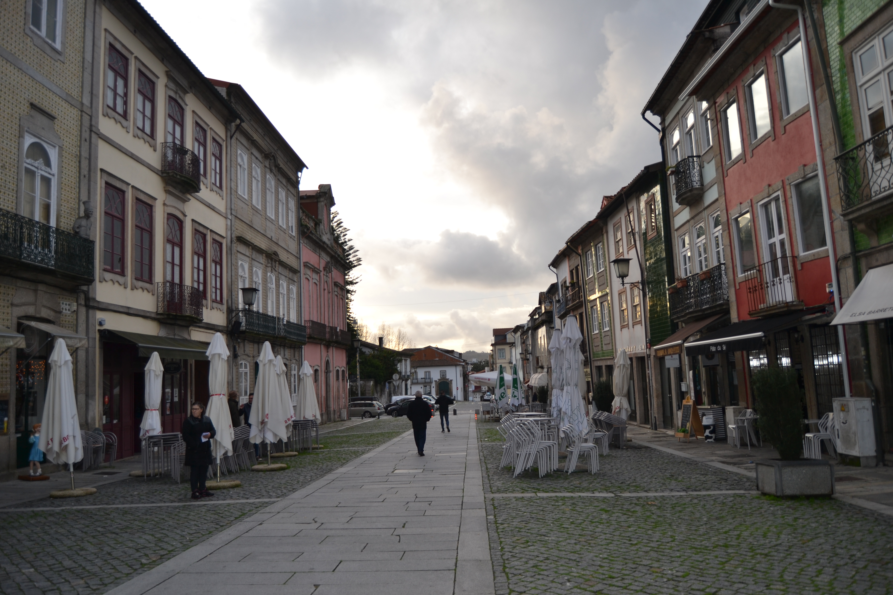
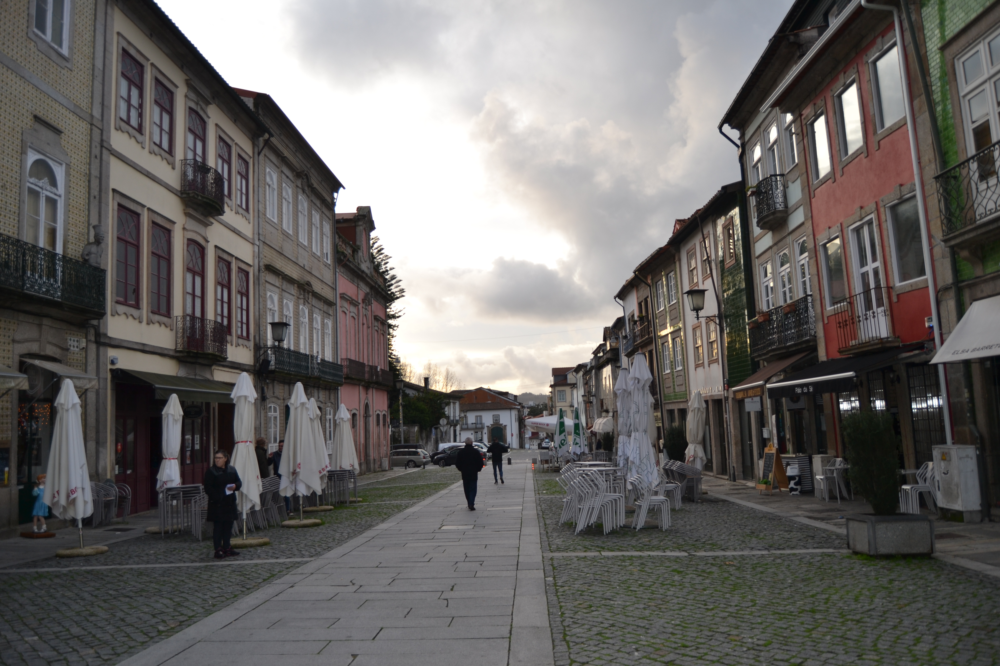

22 Rua de Maximinos
Bastante larga para a época em que foi construída, ligava a
praça do Pão com a Porta de Maximinos ou de
Nossa Senhora da Ajuda , onde houve um altar com esta invocação e com
confraria existente desde 1613 , pelo menos.
Decalcando uma rua da cidade romana, a rua de Maximinos foi durante a
Idade Média, o mais importante local de comércio da cidade de Braga.
Local de residência dos burgueses, que certamente faziam o seu comércio no piso térreo
das casas que habitavam, recebeu deles a sua designação. Com o avançar dos tempos e a
transferência do comércio para a rua do Souto , mudou o seu nome para o de
Maximinos, apropriando-se do topónimo que pertencia à artéria por onde se
prolongava.
Em 1868 foi alargada a toda a extensão da fachada da Sé e
praça do Pão e englobou-as. Essa acção de «modernização» fora já
preparada com demolição da Torre da Nossa Senhora da Ajuda, em 1826 .
Após essas obras, traçadas com base na linha de fachadas do lado Norte, todas as casas
do lado oposto foram destruídas, não restando hoje nenhuma.
Em 1750 , conservava ainda bastantes edifícios de raiz medieval. No lado
Sul há duas casas notáveis de grandes dimensões (prazos 3, 4, 5 e 8), ostentando uma
delas uma pedra de armas. Mas muito mais interessante é o ritmo dos alçados, quase todos
de três pisos (com dois sobrados) e dois vãos, janelas bracarenses simples ou protegidas
por gelosias e, sobretudo, grandes aberturas no piso térreo, em toda a largura da
fachada, a permitir a existência de uma ampla sala para o comércio, que em
1750 lhe devia andar arredio.
Algumas modernizações se notam; mas são apenas aplicações de varandas ou molduras de
pedra em portas ou janelas, que em nada tocaram na estrutura, mesmo exterior, dos
edifícios.
Das 20 casas do lado Norte e 16 do lado Sul, são prazos do Cabido 14 e 13,
respectivamente.
Desde 1925 que esta rua se designa por D. Paio Mendes, em homenagem à
acção dos Arcebispos na independência e formalçao de Portugal.
Visão original


Visão atual
 
Casas
1 Senado da Câmara de Braga Corresponde ao n.º 26 da Praça do Pão .
2 João Batista 440 reis e 2 galinhas
3 António Brreto de Meneses 860 reis e 4 galinhas O enfiteuta é filho de Pedro Barreto de Meneses e de sua mulher D. Maria Barreto . Foram unidas em 1508 . A casa n.º 4 é de herdade dizíma a Deus e paga censo.
4 71 reis e meio (censo) O enfiteuta é filho de Pedro Barreto de Meneses e de sua mulher D. Maria Barreto . Foram unidas em 1508 . A casa n.º 4 é de herdade dizíma a Deus e paga censo.
5 António Barreto de Meneses 730 reis e 2 galinhas O enfiteuta é filho de Pedro Barreto de Meneses e de sua mulher D. Maria Barreto . Foram unidas em 1508 . A casa n.º 4 é de herdade dizíma a Deus e paga censo.
6 Domingos Ferreira, violeiro 800 reis e 2 galinhas O enfiteuta comprou este prazo a D. Maria Barreto de Meneses .
7 Miguel de Araújo Barreto 500 reis e 2 galinhas A casa pertenceu a Pedro Gonçalves Álvares .
8 D. Inácia Gomes da Costa 1200 reis, 2 capões e 2 galinhas A este prazo pertence o n.º 8 da Rua das Chagas .
9 Padre Manuel Pereira da Costa, cura de Argivai. 300 reis e 2 galinhas
10 13 reis e 5 pretos (de censo) O censo é pago por Domingos de Oliveira .
11 94 reis e 5 pretos (de censo) O censo é pago por Domingos de Oliveira .
12 Constantino Teixeira, cirgueiro, casado com Custódia de Sousa 650 reis e 4 galinhas Confronta, do nascente, com a Rua Verde .
13 Alexandre de Oliveira 340 reis e 2 galinhas O enfiteuta herdara esta casa de seu pai, Pedro de Oliveira .
14 Félix Francisco Braga, casado com Ana Lopes 300 reis e 2 capões Esta casa pertencia a Lic. Francisco Gomes de Brito .
15 Manuel Álvares, sapateiro 345 reis e 2 galinhas
16 José de Matos, mercador 350 reis e 2 galinhas O enfiteuta herdara esta casa de seu sogro, José de Oliveira .
17 30 reis (de censo) A casa é foreira à comenda de Lomar. O censo é pago pelo Padre Feliciano Barbosa , congregado.
18 Os herdeiros do Lic. Alexandre Dias Rebelo 520 reis e 2 capões A casa possui, da parte poente, frontaria e serventia pela Vielinha.
19 Custódia Dantas, viúva de Domingos de Araújo, Batefolha 480 reis e 2 galinhas Confronta, do nascente, com a casa dizíma a Deus.
20 Padre Manuel de Almeida 480 reis e 2 galinhas O enfiteuta foi filho e herdeiro de Domingos de Almeida . Confronta, do nascente, com casa foreira à cororaria e, do poent, com casa dizíma a Deus.
21 16 reis e 8 pretos (de censo) Encontra-se unida, numa só morada, com uma casa foreira à cororaria. Confronta, do nascente, com a Rua dos Sapateiros e, do poente, com casa foreira à cororaria da Sé de Braga . O censo é pago por João Teixeira .
22 Quitéria Maria 320 reis e 8 pretos (de censo) A enfiteuta é filha de Custódio da Silva , sapateiro, e de sua mulher, Paula Ribeiro . Confronta, de poente, com casa dizíma a Deus e com casas do cabido e, do norte, com parte da mesma casa, foreira à cororaria.
23 José dos Reis 220 reis e 2 galinhas O enfiteuta foi filho e herdeiro de José Machado , sapateiro e de sua mulher, Catarina Pereira .
24 81 reis (de censo) Confronta, do nascente, com casa de herdade dizíma a Deus. O censo é pago por Marquesa Maria .
25 Padre João Lopes, músico 430 reis e 2 galinhas Confronta, do poente, com casa de herdade dizíma a Deus. Paga 45 reis de censo ao Hospital de S. Marcos e 70 reis à xonfraria de Santiago.
26 Padre Manuel de Matos 360 reis e 2 galinhas Esta casa pertenceu a Baltazar Fernandes . Era do património do Padre Manuel de Matos .
27 Manuel Gonçalves, sapateiro 360 reis e 1 capão
28 Padre João Lopes 420 reis e 1 capão O enfiteuta foi filho de José Lopes , armador. Entre os anos de 1528 e 1633 esteve unida à casa n.º 27.
29 Domingos Francisco, sapateiro 450 reis e 2 galinhas Esta casa fora de Francisco Ferreira .
30 João Batista, sapateiro, casado com Francisca Pereira. 250 reis e 1 galinha
31 e 32 O irmão do Lic. Francisco Ferreira de Araújo 780 reis e 4 galinhas Encontram-se unidas, num só prazo, desde o ano de 1680 .